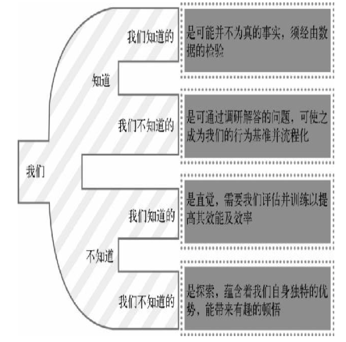
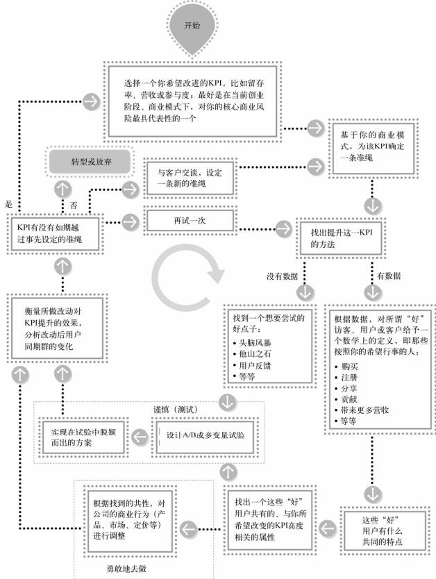

创业记分牌¶
什么是好的数据指标¶
好的数据指标的标准：
- 好的数据指标是比较性的
- 好的数据指标是简单易懂的
-
好的数据指标是一个比率
比率之所以是最佳的数据指标，有以下几个原因：
- 比率的可操作性哟，是行动的向导
- 比率是天生的比较性指标
- 比率适用于比较各种因素间的正相关和负相关
-
好的数据指标会改变行为
如果衡量的指标与目标不相关，员工的商业行为就不会随之发生改变。
找到正确数据指标的5个要点：
-
定性指标与量化指标的结合
定量数据排斥主观因素；定性数据吸纳主观因素。
-
虚荣指标与可付诸行动的指标的区分
如果你有一个数据，却不知如何根据它采取行为，该数据就仅仅是一个虚荣指标。它毫无意义，唯一的作用是让人自我膨胀。你需要利用数据提示信息，指明方向，帮助你改进商业模式，决策下一步的行动。
每当看到一个指标，应该下意识问自己“依据这个指标，我将如何改变当前的商业行为？”如果回答不了这个问题，你大可心不用纠结于这个指标了。如果你不明白哪个指标能改变企业的行为，那你压根就不是在用数据驱动决策，而只是在数据的流沙里挣扎。
真正应该关注的指标，是可付诸行动的指标。
8个需要提防的虚荣数据指标（模式）：
- 点击量
- 页面浏览量（PV值）
- 访问量
- 独立访客数
- 粉丝/好友/赞的数量
- 网站停留时间/浏览页数
- 收集到的用户邮件地址数量
- 下载量（付费应用除外）
-
探索性指标（推测性，提供洞见）与报告性指标（对已有结果的复盘）的不同用途
世界上的事物可以分为这样几类：1. 我们知道我们知道的；2. 我们知道我们不知道的；3. 我们不知道我们知道的；4. 我们不知道我们不知道的。————唐纳德·拉姆斯菲尔德

-
先见性指标（预言未来）与后见性指标（解释过去）
如果要启用先见性数据指标，你需要首先进行同期群分析并比较客户对照组在不同时间段的表现。
后见性和先见性的数据都可以指导行动，区别只是先见性数据能预示将来会发生什么，缩短迭代周期，精益求精。
-
相关性指标与因果性指标的区别
现实中很难找到100%的因果关系，但，即使只发现部分因果关系也很有价值。
相关性很好，因果性更佳。有时，你只能找到一些相关性，但你永远不应该停止寻找因果性。
移动的目标¶
在早期所选定的目标往往是尝试性的，不是板上钉钉。你追逐的是一个移动的目标，因为此时你根本无法定义何为成功。
在创业过程中，调整目标和关键数据指标都是可行的；只要你能做到实事求是，了解此番调整对企业的影响，而不是无视事实，降低期望值，得过且过。
-
首先，了解你的客户。没有比直接与客户和用户对话更有效的手段了。任你得到的数据再多，它们也解释不了事情发生的原因。
-
其次，尽早做出一些假设，并定下你认为可称为“成功”的目标，但切忌在试验中迷失自己。如果需要，可以降低指标的阈值，但并不是为了制造达到这个阈值的假象。使用定性数据来理解你为用户创造的价值是什么。只有调整后的阈值或准绳可以更好地反映（某个细分市场中的）用户使用产品的习惯，调整才是合理的、必要的。
市场细分、同期群分析、A/B测试和多变量分析¶
测试是精益数据分析的灵魂。
-
市场细分
细分市场是一群拥有某种共同特征的人。
先根据一系列的特征细分市场，再比较各个细分市场之间的差异。
-
同期群分析（用户生命周期）
比较相似群体随时间的变化。
每一组用户构成一个同期群，参与整个试验过程。通过比较不同的同期群，可以知道从总体上看，关键指标的表现是否越来越好了。
同期群分析使你能够观察处于生命周期不同阶段客户的行为模式，而非忽略个体的自然生命周期，对所有客户一刀切。同期群分析适用于营收、客户流失度、口碑的病毒式传播、客户支持成本等任何你关注的数据指标。
-
A/B和多变量测试
-
纵向研究：比较不同群体的同期群试验
-
横向研究：在同一时间段对不同被试群体提供不同的体验
A/B测试只有用户流量巨大的网站能对单一因素进行测试并迅速得到答案。
多变量分析法同时对多个属性进行测试，看哪个属性和结果相关性最大，用统计学方法剥离出单个影响因子与结果中某一项指标提升的相关性，更适合流量不大的普通网站。
-
精益数据分析周期¶
精益数据分析的核心在于如何找到一个有意义的指标，然后通过试验改善它，直到令你满意；之后，转而解决下一个问题，或步入下一个阶段。

对你所跟踪的数据指标进行评估¶
找出并写下你一丝不苟遵循并每天回顾的三到五个关键指标，回答以下问题：
- 哪些是好的数据指标？
- 哪些指标帮助你进行商业决策，又有哪些是虚荣指标？
- 你能剔除那些不能为你带来任何价值的指标吗？
- 是否存在你尚未想到但可能更有意义的指标？
划掉那些不好的指标，把新发现的指标加到你的列表里。坚持这样的思考和行动。